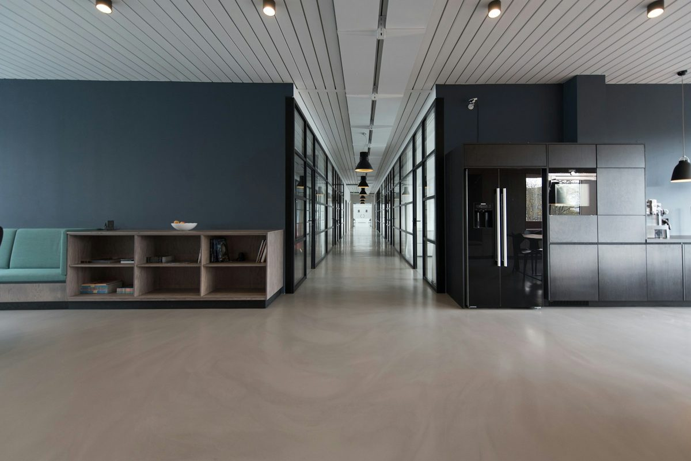
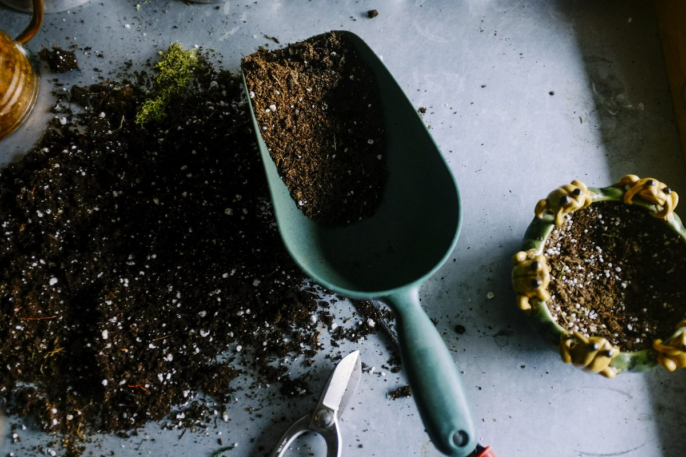
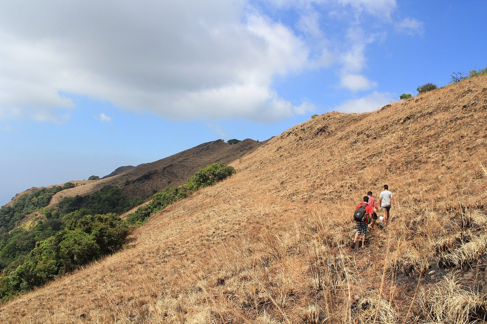
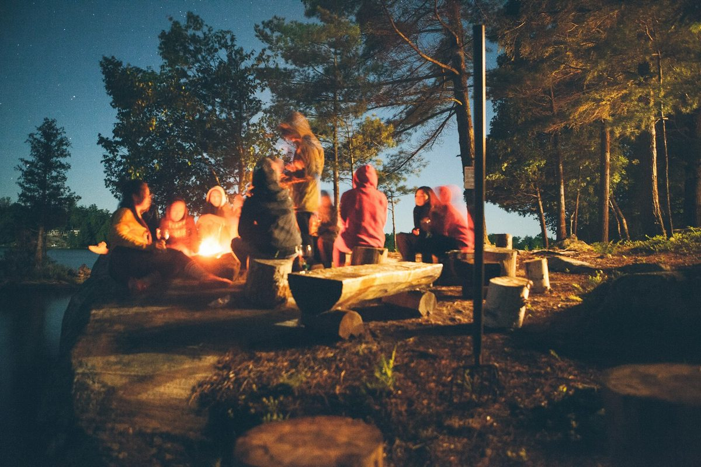

A good remote-work day is not a holiday with Slack open. It is also not eight hours of headphones in a café that never quite settles.
It is a day with edges. A clear morning for deep work. A real break in the middle. An afternoon that moves your body. An evening with people worth talking to — or quiet, if that is what you need.
Work From The Mountains is built around that rhythm: Stay · Work · Explore · Connect. This piece walks through one illustrative day in the hills around Paithalmala, Kannur — not a booking brochure, but the shape of the day we are designing for.
Stay — wake somewhere that lets the day begin
The day starts the night before.
You slept in a proper bed, not on a sofa that doubles as your office. The room is calm. The air is cooler than the plains. You are not already half-working before your feet hit the floor.
That is what Stay means here. Comfortable, affordable, well made. A dorm if you like company; a private room if you need your own door. Sleep stays separate from Slack. When you wake, the day can start cleanly — tea, a short walk, then to a desk that is not the bed you just left.
In the hills above Kannur, mornings arrive slowly. Mist in the valleys. Birds before the first call. You do not need a dramatic sunrise ritual. You need a place that does not rush you into noise.
Work — a morning that protects attention
Then you sit down to work.
Not at a café table with a low battery and a loud playlist. At a proper desk, in a room meant for focus — the kind of coworking corner we are planning: roughly ten desks, quiet enough for deep work, with Wi‑Fi treated as a serious requirement, not a hope.
This is the Work block. Three or four protected hours. Calls later, if you can shift them. Mountains do not make you productive on their own. Fewer wrong interruptions simply leave more room for attention.
You already know how café weeks go. This is the opposite: no password hunt, no fight for the last socket, no sales call at the next table. Just a morning that belongs to the work. When the block ends, you close the laptop on purpose. That closing is part of the design.

Midday — eat, reset, stop performing
Lunch is not a meeting with food attached.
You eat. You step outside. You let the morning settle — a short rest, a second tea, ten minutes of doing nothing useful. Remote workers are good at filling every gap. A mountain day asks you to leave a few empty.
Without that reset, the afternoon becomes another screen stretch and the evening never quite arrives. With it, you return to the day as a person, not as an inbox.

Explore — move before the light goes
Afternoons are for the hills.
Explore here is not a checklist of five viewpoints. It is one outdoor thing, done without hurry: a stretch of the Paithalmala trail, a walk through garden and farm paths, badminton, a swim if the pool in the plan is ready, or simply sitting where the grassland opens and the Western Ghats drop toward Kodagu on one side and the Kannur plains on the other.
You do not need to summit every day. Some days a short loop is enough. The body gets motion. The head gets width. You come back with slightly muddy shoes and a clearer evening — the trade café weeks rarely offer: when the laptop closes, there is somewhere real to go.

Connect — evening without the performance
When the light softens, the day changes gear again.
Connect is a café and lounge for quiet conversation, and a campfire when the evening asks for it. Not a party. Not forced networking. Just people you might actually want to talk to — freelancers finishing a project, remote teammates on a short escape, a couple who both work, a small team that needed a few days away from the office.
You can join the circle or sit slightly outside it with a book. Both count. The point is not constant socialising — it is company that does not cost tomorrow morning’s focus.
Then you sleep in the same calm place you woke up in. Stay, again. The loop closes cleanly.

Why this day beats another café week
None of this is magic. It is structure.
Café weeks blur sleep, work and “time off” into one sticky afternoon. A mountain day of Stay · Work · Explore · Connect keeps them apart on purpose: morning for attention, midday for reset, afternoon for the trail and the green, evening for people — or quiet.
We are building Work From The Mountains around that shape in Paithalmala. Concept, not a claim of an open property. Building in public as we go.
If that kind of day sounds like the week you have been trying to invent from coffee shops, follow along on Instagram at @workfromthemountains. We share the place, the plans and the process.
Stay · Work · Explore · Connect. One day at a time, until the week holds.